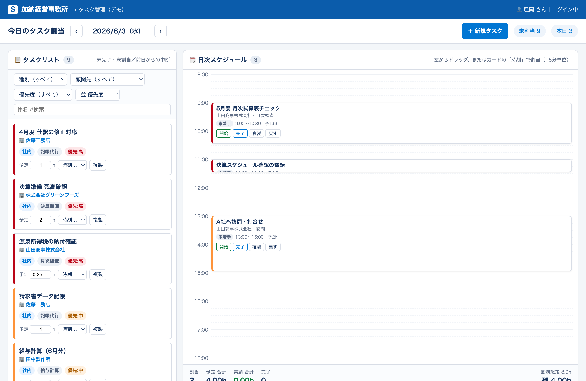
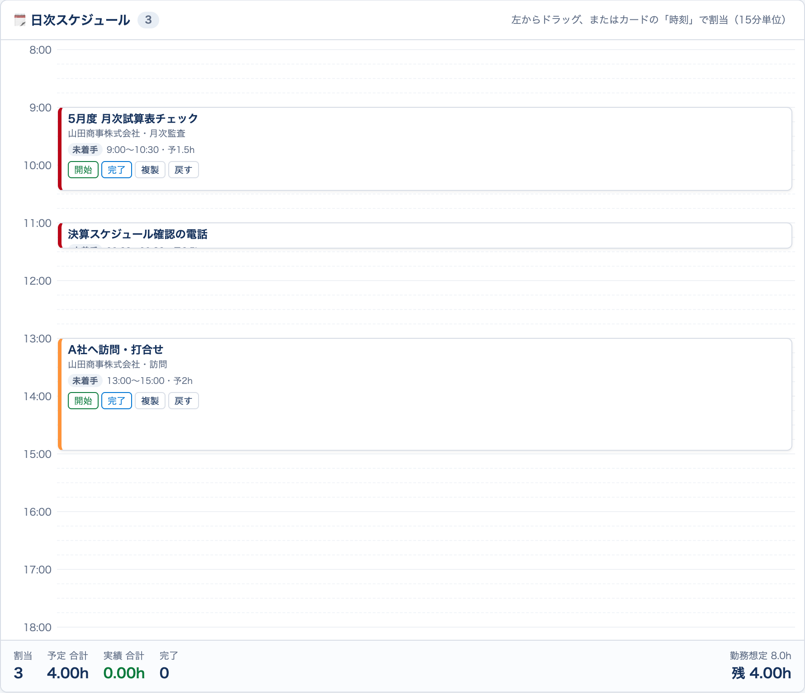
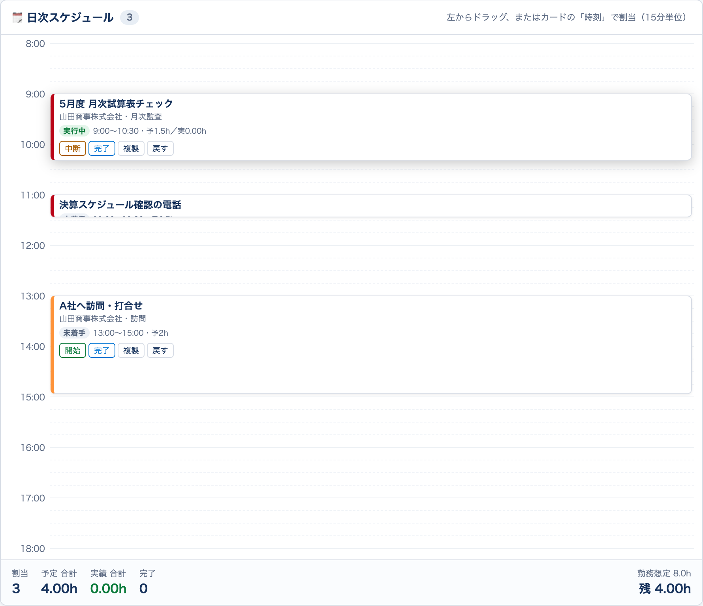
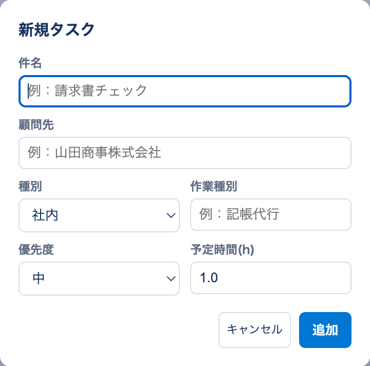
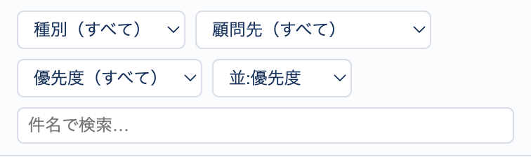
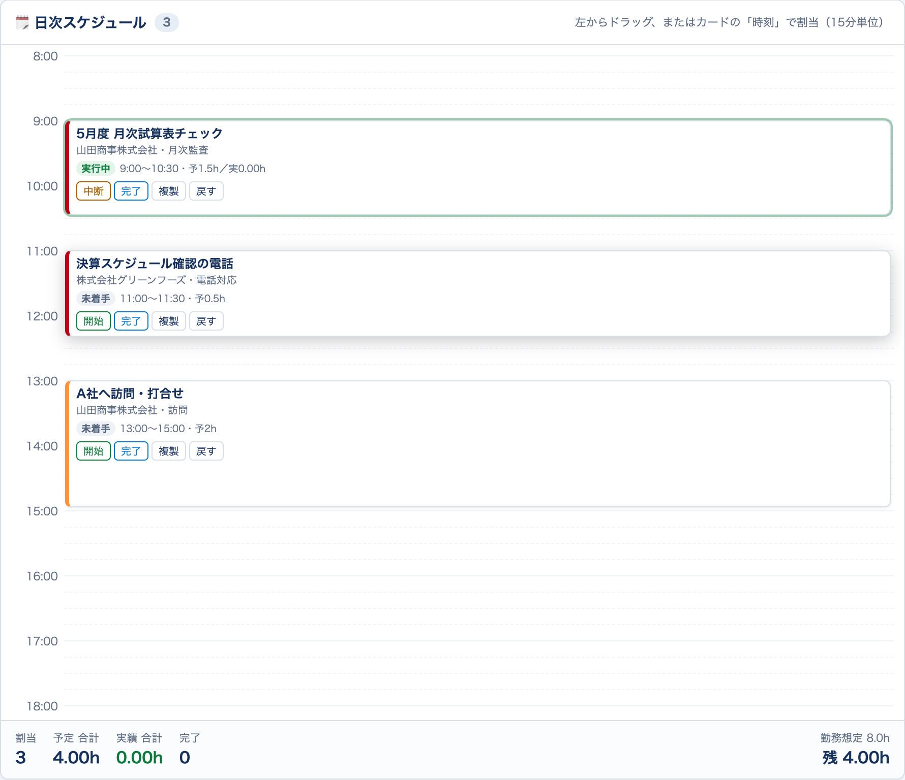

タスク管理画面（日次スケジュール）操作マニュアル【詳細版】
加納経営事務所様 ｜ Salesforce タスク管理機能 最終更新: 2026-06 ／ 対象環境: 検証用サンドボックス（glue-kano-sbx）
この機能のねらい 大量のタスクから「今日やること」を選び、ドラッグ＆ドロップで1日の時間割を組み、 「開始 → 中断 → 完了」のボタン操作だけで実際にかかった時間（実績）を自動で記録します。 終わらなかったタスクは翌日へ自動で繰り越します。
目次
- はじめに（できること）
- 用語の定義
- 画面を開く
- 画面全体の構成
- 1日の使い方（実践フロー）
- 操作リファレンス（手順詳細）
- 標準タスク画面での確認・編集
- 項目リファレンス
- 色・バッジ・アイコン一覧
- 権限と表示範囲
- よくある質問（FAQ）
- トラブルシューティング
- 制約・既知の仕様
- 問い合わせ
1. はじめに（この機能でできること）
| やりたいこと | この画面でできること |
|---|---|
| 今日やることを決める | 未処理タスクの一覧から、今日やるものを時間割へ割り当て |
| 時間割を組む | ドラッグ＆ドロップ（または時刻選択）で開始時刻を指定。所要時間の長さで表示 |
| 作業時間を測る | 開始/中断/完了ボタンで実績時間を自動集計 |
| 急な依頼に対応 | その場で新規タスクを登録 |
| 午前/午後に分ける | タスクを複製して別々の時間帯へ配置 |
| やり残しを繰り越す | 中断したタスクが翌日のリストに自動表示 |
| 1日の負荷を把握 | 予定合計・実績合計・勤務想定8hに対する残/超過を自動計算 |
2. 用語の定義（先に押さえると理解が早いです）
| 用語 | 意味 |
|---|---|
| タスク | やるべき仕事1件。Salesforceの「ToDo（Task）」と同じものです |
| タスクリスト（左） | まだ時間割に入れていない、自分のタスク置き場 |
| 日次スケジュール（右） | その日の時間割（8:00〜19:00の縦の時間軸） |
| 割当 | タスクを時間割の特定の時間帯に置くこと |
| 未割当 | まだ時間割に入っていない状態（左リストにある） |
| 予定時間 | そのタスクにかかる見込み時間（手入力・0.25時間単位） |
| 実績 | 実際にかかった時間（開始/中断/完了から自動計算） |
| 実行状況 | 作業の進み具合（未着手／実行中／中断中／完了） |
| 種別 | タスクの場所区分（外出／社内／会議） |
| 作業種別 | 業務内容の区分（記帳／申告／相談／打合せ 等） |
| 繰越 | 中断のまま終わらなかったタスクを翌日のリストに出すこと |
| 顧問先 | タスクに紐づく取引先（お客様） |
3. 画面を開く
3-1. 手順
- ブラウザで Salesforce にログインします。
- 画面左上の点が9つ並んだアイコン（アプリランチャー）をクリックします。
- 上部の検索欄に「加納タスク管理」と入力します。
- 表示された「加納タスク管理」をクリックします。
- 「タスク管理」タブが開きます。
直接URLで開く場合:
/lightning/n/Task_Scheduler（お使いのSalesforceのドメインに続けて入力）
3-2. スマートフォンで開く場合
- スマホの**ブラウザ（Safari / Chrome）**で同じURLを開きます。
- スマホでは画面が縦並び（上：タスクリスト／下：スケジュール）になります。
- スマホでは細かいドラッグが難しいため、タスクカードの「時刻」欄から時間を選んで割り当ててください（後述 6-2）。
3-3. 開けない・表示されないとき
- 「ログインできない」場合 → 検証用（サンドボックス）環境にログインしているか確認してください（本番環境ではありません）。
- エラーが出る場合 → スクリーンショットをチャットワークへお送りください。
4. 画面全体の構成
▼ 実際の画面（全体イメージ）

下図は各エリアの対応を示した模式図です。
┌──────────────────────────────────────────────────────────┐
│ 今日のタスク割当 ‹ 2026/6/3（水） › ＋新規タスク 未割当6 本日3 │ ← ① ツールバー
├───────────────────────────┬──────────────────────────────┤
│ 📋 タスクリスト 6 │ 🗓 日次スケジュール 3 │ ← ②見出し（件数）
│ ┌─[種別▾][顧問先▾][優先度▾][並▾][🔍検索]─┐│ 8:00 │ ← ③フィルタ ／ ④時間軸
│ │ ■ 5月度 月次試算表チェック ││ 9:00 ┌ 月次チェック 実行中 ┐ │
│ │ 🏢 山田商事 [社内][記帳][優先:高] ││ └ 9:00〜10:30 予1.5h ┘ │ ← ⑤スケジュールカード
│ │ 予定[1.5]h [時刻▾] [複製] ││ 10:00 │
│ │ ■ 請求書データ記帳 … ││ 11:00 ┌ 電話 … ┐ │
│ └────────────────────────┘│ 13:00 ┌ 訪問 … ┐ │
│ │ … │
├───────────────────────────┴──────────────────────────────┤
│ 割当 3 ｜ 予定合計 4.00h ｜ 実績合計 1.20h ｜ 完了 1 ｜ 残 4.00h（8h想定） │ ← ⑥ 集計バー
└──────────────────────────────────────────────────────────┘
※ 仕様合意用 → 実データ連携。自分が所有する未完了タスクを日次で割当できます。 ← ⑦ 注記
各エリアの説明
① ツールバー（上部）
- ‹ 日付 › … 表示する日を前後に切り替え（中央に表示中の日付と曜日）
- ＋新規タスク … その場で新しいタスクを追加
- 未割当 N … 今、時間割に入っていない自分の未完了タスクの件数
- 本日 N … 表示中の日に割り当て済みのタスク件数
② 見出し … 各列のタイトルと件数バッジ
③ フィルタ（左列の上） … 種別／顧問先／優先度／並べ替え／件名検索（詳細 6-9）
④ 時間軸（右列） … 8:00〜19:00。1時間ごとに目盛り線、15分ごとに薄い線
⑤ スケジュールカード（右列） … 割り当て済みタスク。高さ＝予定時間に比例
⑥ 集計バー（下部） … その日の合計値（詳細 6-10）
⑦ 注記 … この画面の位置づけ
5. 1日の使い方（実践フロー）
実際の流れに沿った使い方の例です。
朝（その日の段取り）
- 画面を開き、日付が今日になっていることを確認します。
- 左のタスクリストを見て、今日やるタスクを選びます。
- 必要に応じて顧問先や種別で絞り込み、優先度順に並べ替えます（6-9）。
- 上から順に、右のスケジュールへドラッグして時間割を組みます（6-2）。
- 下の集計バーで「予定合計」を確認。8hを超えていないか（残/超過）をチェックします。
- 多すぎる場合は、優先度の低いタスクを翌日に回す（割り当てない）等で調整します。
日中（作業しながら）
- 取りかかるタスクの「開始」を押します（状況＝実行中）。
- 別件で中断するときは「中断」（それまでの時間が実績に加算）。
- 終わったら「完了」（取り消し線になり、完了数に加算）。
- 急な依頼が来たら「＋新規タスク」で登録し、空き時間へ割当（6-6）。
- 同じ仕事を午前・午後に分けるときは「複製」して2つを別の時間に配置（6-7）。
夕方（締め）
- 「実績合計」で今日の実働時間を確認します。
- 終わらなかったタスクは「中断」のままにしておくと、翌日のリストに自動で繰り越しされます（6-5）。
6. 操作リファレンス（手順詳細）
6-1. 日付を切り替える
- ツールバーの ‹（前日）／ ›（翌日）をクリックします。
- 中央に「2026/6/3（水）」のように表示中の日付と曜日が出ます。
- 切り替えると、左右の表示がその日の内容に更新されます。
6-2. タスクを時間割に入れる（割当）
下が「ドラッグするタスクカード」、右が割当先の「日次スケジュール」です。

方法A：ドラッグ＆ドロップ（PC推奨）
- 左のタスクカードをマウスでつかみます（カーソルが手の形に）。
- 右のスケジュールの入れたい時間帯までドラッグします。
- 指を離すと、その**時刻（15分単位に自動スナップ）**に配置されます。
- 例：9:07 付近で離すと 9:00 または 9:15 に吸着します。
方法B：時刻を選んで割当（スマホ・簡単操作）
- タスクカードの「時刻…」のプルダウンを開きます。
- 開始時刻（8:00〜18:45、15分刻み）を選びます。
- 選んだ時刻に配置されます。
配置後、カードは予定時間の長さに比例した高さで表示されます（0.5h は短く、2.0h は長く）。 同じ時間帯に複数が重なる場合は、横に並べて表示されます。
6-3. 予定時間を変える
- 左のタスクカードの「予定 ◯ h」の数字欄をクリックします。
- 数値を入力（または上下ボタン）して変更します。0.25（15分）単位です。
- 変更すると、スケジュール上の高さと、集計バーの「予定合計」に即反映されます。
※ 予定時間の変更は左のタスクカードで行います。
6-4. 開始 / 中断 / 完了（実績の自動記録）
スケジュール上のタスクカードのボタンで操作します。状態によって出るボタンが変わります。

上：「実行中」のタスク（緑バッジ＋中断/完了ボタン）。下：「未着手」のタスク（開始/完了ボタン）。状態の移り変わり：
┌─────────┐ 開始 ┌─────────┐ 中断 ┌─────────┐
│ 未着手 │ ────▶ │ 実行中 │ ────▶ │ 中断中 │
└─────────┘ └─────────┘ └─────────┘
│ 完了 │ 再開（→実行中）
▼ │ 完了（→完了）
┌─────────┐ ◀────────┘
│ 完了 │ 取消（→中断中）
└─────────┘
| 今の状況 | 表示されるボタン | 押すと |
|---|---|---|
| 未着手 | 開始 ／ 完了 | 開始＝計測スタート（実行中へ） |
| 実行中 | 中断 ／ 完了 | 中断＝経過を実績へ加算（中断中へ）／完了＝締める |
| 中断中 | 再開 ／ 完了 | 再開＝計測再スタート／完了＝締める |
| 完了 | 取消 | 完了を取り消し（中断中へ戻す） |
- 実績の数え方：開始した時刻から中断（または完了）までの経過が、分単位で積み上がります。中断→再開を繰り返しても合算されます。
- 実行中のタスクは、カードに「実◯h」が毎秒更新で表示されます。
- 完了したタスクは取り消し線＋薄い表示になり、集計バーの「完了」が＋1されます。
6-5. 中断したタスクの翌日繰越
- 中断中のまま完了していないタスクは、翌日以降のタスクリストに「前日から中断」バッジ付きで表示されます。
- 翌日、そのタスクをまたスケジュールへ入れて続きの作業ができます。
- 完了したタスクは繰り越されません。
6-6. 新規タスクを追加する

ツールバーの「＋新規タスク」をクリックします。
入力欄が出ます。各項目を入力します。
項目 説明 初期値 件名 タスク名（必須） 空 顧問先 プルダウンから取引先を選択（未設定も可） （未設定） 種別 社内／外出／会議 社内 作業種別 業務区分を入力（記帳 等） 記帳 優先度 高／中／低 中 予定時間(h) 見込み時間（0.25単位） 1.0 「追加」を押すと、左のタスクリストに未割当で追加されます。
やめる場合は「キャンセル」。
件名が空のままだと「件名を入力してください」と表示され、追加できません。
6-7. タスクを複製する
- タスクカードの「複製」ボタンを押します。
- 件名の末尾に「（複製）」が付いたコピーが、未割当でタスクリストに作られます。
- 種別・作業種別・顧問先・優先度・予定時間は引き継がれます。
- 実績は0、実行状況は未着手にリセットされます。
- 元と複製を、それぞれ別の時間帯（午前／午後など）へ割り当てます。
6-8. 時間割から外す（割当解除）
- スケジュール上のカードの「戻す」を押します（またはPCで左リストへドラッグ）。
- そのタスクは未割当に戻り、左のタスクリストに表示されます。
6-9. 絞り込み・並べ替え（左列のフィルタ）

| フィルタ | 動作 |
|---|---|
| 種別 | 外出／社内／会議で絞り込み（「種別（すべて）」で解除） |
| 顧問先 | 表示中タスクに含まれる顧問先で絞り込み |
| 優先度 | 高／中／低で絞り込み |
| 🔍 検索 | 件名に入力文字を含むタスクだけ表示 |
| 並べ替え | 優先度 ／ 予定時間（長い順） ／ 種別 ／ 顧問先 |
- 複数のフィルタは同時に効きます（例：顧問先＝山田商事 かつ 種別＝社内）。
- フィルタは左のタスクリストに対して働きます（右のスケジュールは当日分を常に表示）。
6-10. 集計バーの読み方（下部）
| 表示 | 意味 |
|---|---|
| 割当 | その日に割り当てたタスク件数 |
| 予定合計 | 割当タスクの予定時間の合計。8hを超えると赤色 |
| 実績合計 | 実際にかかった時間の合計（緑色） |
| 完了 | 完了したタスク件数 |
| 残 / 超過 | 勤務想定8hに対する残り時間。超えると「超過 ◯h」（赤） |
6-11. 短いタスクのボタンが押しにくいとき

- 予定時間が短いタスクはカードが小さく表示されます。
- マウスを乗せる（スマホはタップ）と、カードが広がって最前面に出ます。
- 広がった状態で「開始／中断／完了／複製／戻す」を押せます。
7. 標準タスク画面での確認・編集
この機能の項目は、通常のタスク（ToDo）詳細画面にも「タスク管理（日次スケジュール）」というセクションで表示され、確認・編集できます（タスク・行動の両方のレイアウトに追加済み）。
表示される項目：種別／予定時間(h)／実績(分)／実行状況／スケジュール開始時刻
※ 日々の操作は本タスク管理画面で行うのが基本です。標準画面は確認・補正用にお使いください。
8. 項目リファレンス
| 項目（画面表示） | 内部名 | 種類 | 値・説明 | 誰がセット |
|---|---|---|---|---|
| 種別 | TaskCategory__c | 選択リスト | 外出／社内／会議 | ユーザー |
| 作業種別 | WorkType__c | 選択リスト | 申告／相談／資料作成／打合せ／記帳／給与計算／年末調整／届出／その他 | ユーザー |
| 予定時間(h) | Planned_Hours__c | 数値 | 見込み時間（0.25単位） | ユーザー |
| 実績(分) | Actual_Minutes__c | 数値 | 開始〜完了で自動集計 | 自動 |
| 実行状況 | RunStatus__c | 選択リスト | 未着手／実行中／中断中／完了 | 自動（ボタン操作） |
| スケジュール開始時刻 | Scheduled_Start__c | 日時 | 割り当てた日時 | 自動（割当操作） |
| 計測基点 | Running_Since__c | 日時 | 実行中の計測開始時刻（内部用） | 自動 |
| 優先度 | Priority | 選択リスト | 高(High)／中(Normal)／低(Low) | ユーザー |
| 顧問先 | （関連先） | 関連 | 取引先 | ユーザー |
9. 色・バッジ・アイコン一覧
種別バッジ
- 🟣 外出（紫） ／ 🔵 社内（青） ／ 🟠 会議（橙）
優先度バッジ／カード左の縦線
- 🔴 高（赤） ／ 🟠 中（橙） ／ 🟢 低（緑）
実行状況バッジ
- ⚪ 未着手（灰） ／ 🟢 実行中（緑・カードが緑枠で強調） ／ 🟡 中断中（黄・カードが薄黄） ／ ⚫ 完了（灰・取り消し線）
その他バッジ
- 🟡「前日から中断」… 繰越タスクの目印
- 🏢 … 顧問先（取引先）名
10. 権限と表示範囲
- 表示されるのは「自分が担当（所有）するタスク」だけです。他の人のタスクは表示されません。
- 本機能は権限セット「加納タスク管理」で利用できます（現在、全アクティブユーザーに割当済み）。
- データの追加・更新は画面の操作を通じて行われ、自分のタスクに対してのみ反映されます。
11. よくある質問（FAQ）
Q. 入力した内容は保存されますか？ A. はい。割当・予定時間・実績・状況はその場で保存され、ブラウザを閉じても残ります。
Q. 他の担当者のタスクは見えますか？ A. 見えません。各自、自分のタスクのみ表示されます。
Q. スケジュールは何時から何時まで？ A. 8:00〜19:00、15分単位で割り当てできます。
Q. 予定時間と実績の違いは？ A. 予定時間は「見込み（手入力）」、実績は「実際にかかった時間（開始/完了から自動計算）」です。
Q. 中断したまま帰っても大丈夫？ A. 大丈夫です。翌日のリストに「前日から中断」で表示され、続きができます。
Q. 週間・月間で予定を見たいです。 A. 現在は日次画面です。週間・月間ビューは次の開発フェーズで対応予定です。
Q. スマホでドラッグできません。 A. スマホは「時刻」欄から割り当ててください。ドラッグはPC推奨です。
12. トラブルシューティング
| 症状 | 確認・対処 |
|---|---|
| 画面が出ない／アプリが見つからない | 検証用（サンドボックス）環境にログインしているか確認。権限割当の確認が必要な場合は担当へ連絡 |
| タスクが表示されない | 日付（‹ ›）と、自分が担当のタスクかを確認。完了済みは未割当リストに出ません |
| ドラッグできない | スマホの場合は「時刻」欄から割当。PCでも反応しない場合は画面を再読み込み |
| ボタンが押せない（短いタスク） | カードにマウスを乗せる（スマホはタップ）と広がって押せます |
| 実績が増えない | 「開始」を押してから時間が経過する必要があります。中断/完了で加算されます |
| エラーが出る | スクリーンショットをチャットワークへ送付してください |
13. 制約・既知の仕様
- スケジュールの時間帯は 8:00〜19:00、割当は 15分（0.25h）単位。
- ドラッグ＆ドロップはPC推奨（タッチ端末ではドラッグ非対応のため「時刻」欄を使用）。
- 週間・月間ビューは未実装（次フェーズ）。現状は日次のみ。
- 表示対象は自分の所有タスクのみ。
- 現在は検証用（サンドボックス）環境での提供です。
14. 問い合わせ
本機能は要望に応じて改善していきます。お気づきの点・ご要望はチャットワークでお知らせください。エラー時はスクリーンショットを添えていただけると対応がスムーズです。
（本マニュアルは現行の検証環境の仕様に基づいて作成しています。仕様変更時は更新します。）